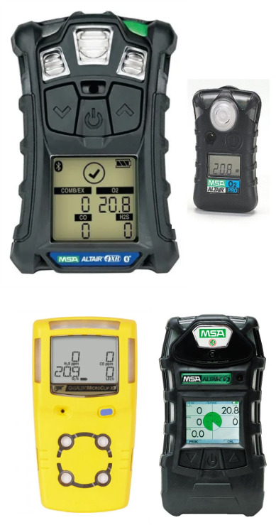

SOS4 SERVICES ofrece soluciones especializadas en la venta, renta, mantenimiento y recarga de detectores de gases industriales, incluyendo:
Nuestros servicios están diseñados para garantizar altos estándares de seguridad, confiabilidad operativa y cumplimiento normativo en la prevención y detección de riesgos atmosféricos en instalaciones industriales.